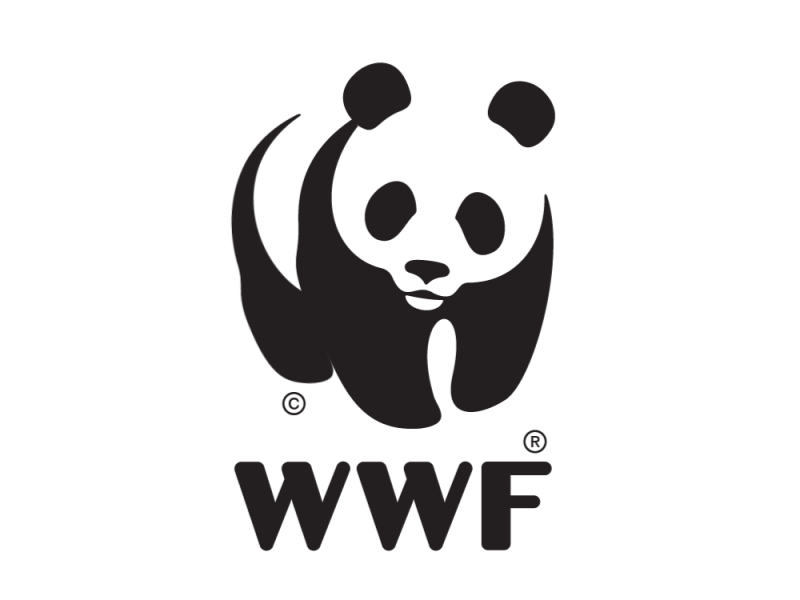
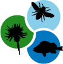
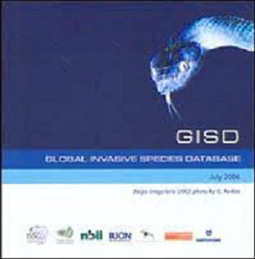
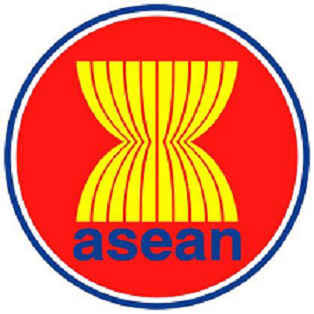
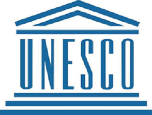
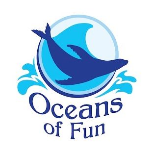

Campaigns and Websites
We, through this blogsite, wish for people to unite and combat the poisons that are ravaging the biodiversity of the home we place so dear in our hearts. So far, we are just students who cannot really accomplish something extravagant to the point that there will be a worldwide change, so we want to unite other websites and showcase what they are doing to help our planet.

BBC Earth
"Think beyond your everyday world, and experience the Universe as it really is." That is the mission statement of this breath-taking website, answering questions that the world has to offer, from the darkest depths of the universe to the beauty of humanity.
"Think beyond your everyday world, and experience the Universe as it really is." That is the mission statement of this breath-taking website, answering questions that the world has to offer, from the darkest depths of the universe to the beauty of humanity.

WorldWide
“Conservation endures as a living discipline because it is inhabited by a magnificent collection of people. Only by working together can we create solutions to the most vexing problems we face.”- Carter Roberts (President and CEO) WWF strives for the preservation of the beauty of life and its rescue.
“Conservation endures as a living discipline because it is inhabited by a magnificent collection of people. Only by working together can we create solutions to the most vexing problems we face.”- Carter Roberts (President and CEO) WWF strives for the preservation of the beauty of life and its rescue.
ABCDNet
A shared database network among Asia, ABCDNet shows the conservation and sustainable use of biodiversity through developing and sustaining the data sharing network and it also aims to promote joint efforts towards ecosystem service in the continent.
A shared database network among Asia, ABCDNet shows the conservation and sustainable use of biodiversity through developing and sustaining the data sharing network and it also aims to promote joint efforts towards ecosystem service in the continent.

NASA Biological Diversity Program
This program supports basic research and uses NASA observations and models to improve our understanding on what is biodiversity, why is it always changing, and the interactions in the Earth System.
This program supports basic research and uses NASA observations and models to improve our understanding on what is biodiversity, why is it always changing, and the interactions in the Earth System.

Global Invasive Species Database
This Database is a free online searchable source showing the alien and invasive species that negatively impact biodiversity. It aims to show awareness about these invasive species and to implement prevention activites through a specialist's knowledge
This Database is a free online searchable source showing the alien and invasive species that negatively impact biodiversity. It aims to show awareness about these invasive species and to implement prevention activites through a specialist's knowledge
The IUCN Red List
Not only it is just a simple list of species, the IUCN Red List informs and take action for biodiversity conservation, helping to protect the natural resources needed to survive. It provides information about the important factors of conservation and the actions that will help with the necessarcy decisions in protecting wildlife and the environment.
Not only it is just a simple list of species, the IUCN Red List informs and take action for biodiversity conservation, helping to protect the natural resources needed to survive. It provides information about the important factors of conservation and the actions that will help with the necessarcy decisions in protecting wildlife and the environment.
National Geographic
"Our future depends on nature. Without wildlife and wild places, there is no us." Along with the Wyss Campaign for Nature, National Geographic is committed to conserving threatened and endangered species and the important environments needed to survive through protection of the Earth's land and ocean by 2030.
"Our future depends on nature. Without wildlife and wild places, there is no us." Along with the Wyss Campaign for Nature, National Geographic is committed to conserving threatened and endangered species and the important environments needed to survive through protection of the Earth's land and ocean by 2030.

ASEAN
"One Vision, One Identity, One Community"One of the important purposes of ASEAN is to collaborate more effectively with other countries for the greater utilisation of different factors that affect the overall performance of the regions such as agriculture and industries, expansion of trade, improvement and raising of the living standards of people.
"One Vision, One Identity, One Community"One of the important purposes of ASEAN is to collaborate more effectively with other countries for the greater utilisation of different factors that affect the overall performance of the regions such as agriculture and industries, expansion of trade, improvement and raising of the living standards of people.

UNESCO
Since wars begin in the minds of men and women, it is in the minds of men and women that the defences of peace must be constructed.UNESCO seeks to build peace through international cooperation in education, science, and culture. To make this happen, they developed educational tools to help people live as global citizens while being free of hate and intolerance. They also strengthen bonds aong nations through promoting cultural heritage and equality of cultural dignity.
Since wars begin in the minds of men and women, it is in the minds of men and women that the defences of peace must be constructed.UNESCO seeks to build peace through international cooperation in education, science, and culture. To make this happen, they developed educational tools to help people live as global citizens while being free of hate and intolerance. They also strengthen bonds aong nations through promoting cultural heritage and equality of cultural dignity.

Oceans Of Fun
Dedicated to the field of mammal science, this organization aims to provide the best environment possible for the marine animals, along with educating the public about marine life and environmental protection through interactive learning programs that gives the people opportunity to connect and interact with these mammals all while learning more about their species as a whole and what the public can do to help them live on in their natural habitat.
Dedicated to the field of mammal science, this organization aims to provide the best environment possible for the marine animals, along with educating the public about marine life and environmental protection through interactive learning programs that gives the people opportunity to connect and interact with these mammals all while learning more about their species as a whole and what the public can do to help them live on in their natural habitat.